After preparing this topic, you should be able to:
Describe lines in three-dimensional space using vector, parametric, and symmetric equations, and use these representations to analyze lines and their relationships.
Describe planes in three-dimensional space using normal vectors and scalar equations, and use these equations to determine intersections, parallelism, and angles between planes.
In three-dimensional engineering and computing applications, we often need to describe the position and direction of an object mathematically.
For example, consider a robotic arm moving its end-effector through three-dimensional space. The robot may move along a straight path from one position to another, so we need a mathematical equation that describes every point on that path.
A point alone tells us where the motion starts, but it does not tell us which direction the object moves.
A direction vector together with a point completely determines a line in space.
Once the line is represented mathematically, we can determine the position of the object for different values of a parameter, find where its path intersects a plane, and determine whether two paths intersect, are parallel, or are skew.
Therefore, vector, parametric, and symmetric equations provide mathematical tools for describing and analyzing straight-line motion in three-dimensional space.
A robotic-arm positioning problem of this type can be solved by studying the first objective.
In engineering and computer science, many important objects and boundaries are naturally represented by planes.
For example, a computer-controlled cutting machine may move a tool toward a flat surface, while a robot may need to determine where a straight trajectory intersects a planar surface.
To describe such a surface mathematically, we need more information than a single point.
A vector perpendicular to the plane, called a normal vector, provides the direction that uniquely determines the orientation of the plane.
Once a point on the plane and a normal vector are known, we can construct an equation that describes every point on the plane.
Plane equations also allow us to determine whether two planes are parallel, find the angle between them, and determine the line where two nonparallel planes intersect.
Therefore, equations of planes provide a mathematical framework for describing flat surfaces and analyzing their geometric relationships in three-dimensional space.
A robotic-tool and planar-surface positioning problem of this type can be solved by studying the second objective.
A line in the xy-plane is determined when a point on the line and its direction are known.
The same basic idea applies to a line in three-dimensional space.
Suppose a line L passes through the point P_0(x_0,y_0,z_0) and has direction vector \mathbf v.
Let \mathbf r_0 be the position vector of P_0 and let \mathbf r be the position vector of an arbitrary point P(x,y,z) on the line.
The vector from P_0 to P is parallel to the direction vector \mathbf v.
Therefore, there is a scalar t such that
\mathbf r-\mathbf r_0=t\mathbf v
\mathbf r=\mathbf r_0+t\mathbf v
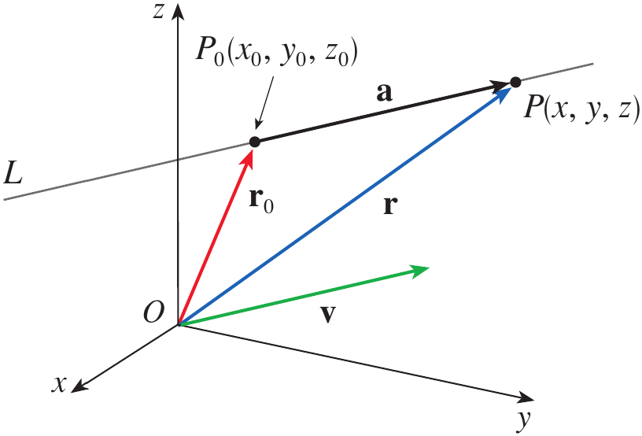
Figure 1. A line in three-dimensional space determined by a point and a direction vector.
\langle x,y,z\rangle = \langle x_0,y_0,z_0\rangle +t\langle a,b,c\rangle
\langle x, y, z \rangle = \langle x_0 + at, y_0 + bt, z_0 + ct \rangle
x=x_0+at
y=y_0+bt
z=z_0+ct
Every value of t gives a point on the line.
Different choices of the starting point or a parallel direction vector can produce different-looking equations for the same line.
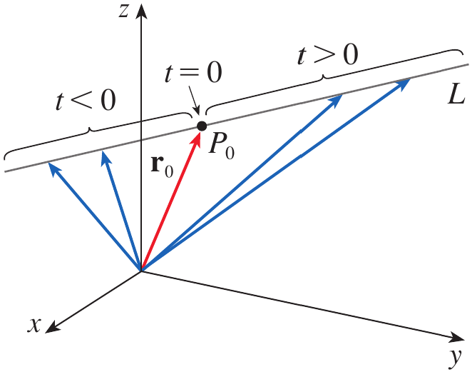
Figure 2. A line traced by the position vector as the parameter t varies.
Find a vector equation and parametric equations for the line that passes through the point (5,1,3) and is parallel to the vector \mathbf i+4\mathbf j-2\mathbf k.
Find two other points on the line.
The given point has position vector
\mathbf r_0=5\mathbf i+\mathbf j+3\mathbf k
The direction vector is
\mathbf v=\mathbf i+4\mathbf j-2\mathbf k
Therefore, using the vector equation of a line,
\mathbf r = (5\mathbf i+\mathbf j+3\mathbf k) +t(\mathbf i+4\mathbf j-2\mathbf k)
Equivalently,
\boxed{ \mathbf r = (5+t)\mathbf i+(1+4t)\mathbf j+(3-2t)\mathbf k }
Therefore, the parametric equations are
\boxed{x=5+t}
\boxed{y=1+4t}
\boxed{z=3-2t}
For t=1,
x=6,\qquad y=5,\qquad z=1
Thus, one other point on the line is
\boxed{(6,5,1)}
For t=-1,
x=4,\qquad y=-3,\qquad z=5
Thus, another point is
\boxed{(4,-3,5)}
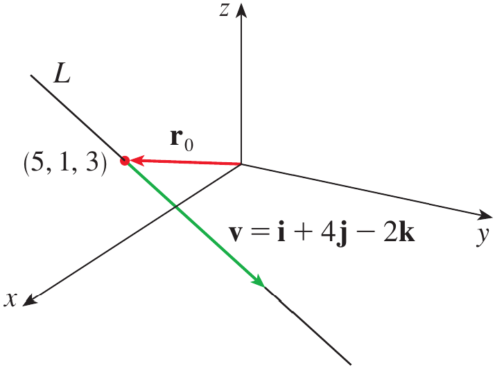
Figure 3. A line and the given points used to describe its direction and position.
If a direction vector of a line is \mathbf v=\langle a,b,c\rangle then a, b, and c are called the direction numbers of the line.
Consider the parametric equations
x=x_0+at,\qquad y=y_0+bt,\qquad z=z_0+ct
t=\frac{x-x_0}{a}
t=\frac{y-y_0}{b}
t=\frac{z-z_0}{c}
\frac{x-x_0}{a} = \frac{y-y_0}{b} = \frac{z-z_0}{c}
Find parametric equations and symmetric equations of the line that passes through the points A(2,4,-3) and B(3,-1,1).
At what point does this line intersect the xy-plane?
A direction vector for the line is obtained from \overrightarrow{AB}.
\mathbf v = \langle 3-2,-1-4,1-(-3) \rangle
\mathbf v=\langle1,-5,4\rangle
Taking A(2,4,-3) as the point on the line, the parametric equations are
\boxed{x=2+t}
\boxed{y=4-5t}
\boxed{z=-3+4t}
Therefore, the symmetric equations are
\boxed{ \frac{x-2}{1} = \frac{y-4}{-5} = \frac{z+3}{4} }
To find where the line intersects the xy-plane, we use z=0.
-3+4t=0
Hence,
t=\frac34
Substituting this value into the equations for x and y gives
x=2+\frac34=\frac{11}{4}
y=4-5\left(\frac34\right)=\frac14
Therefore, the line intersects the xy-plane at
\boxed{\left(\frac{11}{4},\frac14,0\right)}
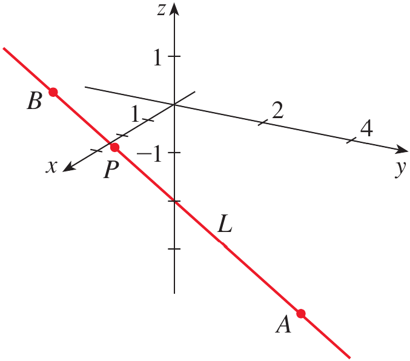
Figure 4. Line L and point P where it intersects the xy-plane.
A line extends indefinitely in both directions, but sometimes we need only the portion between two points.
Suppose the position vectors of two endpoints are \mathbf r_0 and \mathbf r_1.
The line through the two points can be written as
\mathbf r=\mathbf r_0+t(\mathbf r_1-\mathbf r_0)
0\leq t\leq1
\boxed{ \mathbf r(t)=(1-t)\mathbf r_0+t\mathbf r_1 \qquad 0\leq t\leq1 }
Two lines in space can be parallel, intersecting, or skew.
Two lines are parallel when their direction vectors are parallel.
If their direction vectors are not parallel, we can determine whether they intersect by solving their parametric equations simultaneously.
If two nonparallel lines do not intersect, they are called skew lines.
Show that the lines
L_1:\quad x=1+t,\qquad y=-2+3t,\qquad z=4-t
L_2:\quad x=2s,\qquad y=3+s,\qquad z=-3+4s
are skew lines.
The direction vectors are
\mathbf v_1=\langle1,3,-1\rangle
and
\mathbf v_2=\langle2,1,4\rangle
These vectors are not scalar multiples of each other, so the lines are not parallel.
If the lines intersect, there must be values of t and s satisfying all three equations simultaneously.
Equating corresponding coordinates gives
1+t=2s
-2+3t=3+s
4-t=-3+4s
Solving the first two equations gives
t=\frac{11}{5} \qquad\text{and}\qquad s=\frac85
However, these values do not satisfy the third equation.
Therefore, the two lines do not intersect.
Since the lines are neither parallel nor intersecting, they are skew lines.
\boxed{L_1\text{ and }L_2\text{ are skew lines}}
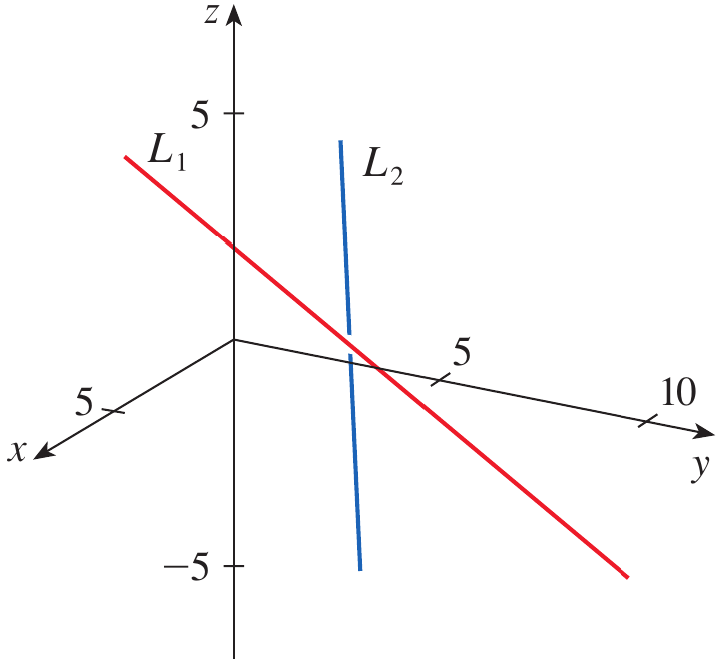
Figure 5. Two skew lines in three-dimensional space.
Find parametric equations for the line through P(1,2,-1) parallel to \mathbf v=\langle2,-3,4\rangle.
Are the lines
L_1:\quad x=1+t,\quad y=2+2t,\quad z=3-t
and
L_2:\quad x=4+2s,\quad y=8+4s,\quad z=1-2s
parallel?
A line in space is determined by a point and a direction vector, but a plane requires a different type of directional information.
A vector perpendicular to a plane completely determines the orientation of that plane.
A normal vector to a plane is a nonzero vector that is perpendicular to every direction lying in the plane.
\mathbf n=\langle a,b,c\rangle
Let P(x,y,z) be any point on the plane.
The vector from P_0 to P is
\mathbf r-\mathbf r_0
\boxed{ \mathbf n\cdot(\mathbf r-\mathbf r_0)=0 }
\boxed{ \mathbf n\cdot\mathbf r=\mathbf n\cdot\mathbf r_0 }
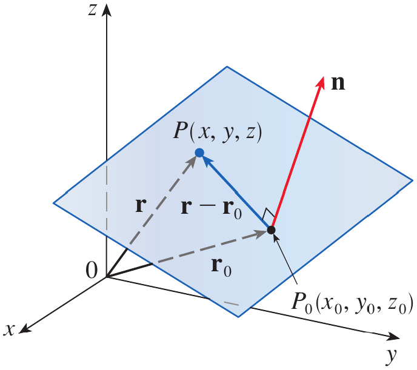
Figure 6. A plane determined by a point and a normal vector.
Let \mathbf n=\langle a,b,c\rangle and \mathbf r=\langle x,y,z\rangle.
If P_0=(x_0,y_0,z_0) then the vector equation \mathbf n\cdot(\mathbf r-\mathbf r_0)=0 becomes
\langle a,b,c\rangle \cdot \langle x-x_0,y-y_0,z-z_0\rangle =0
\boxed{ a(x-x_0)+b(y-y_0)+c(z-z_0)=0 }
\boxed{ax+by+cz+d=0}
Find an equation of the plane through the point (2,4,-1) with normal vector \mathbf n=(2,3,4). Find the intercepts and sketch the plane.
The point is
(x_0,y_0,z_0)=(2,4,-1)
The normal vector is
\mathbf n=\langle2,3,4\rangle
Using the scalar equation of a plane,
a(x-x_0)+b(y-y_0)+c(z-z_0)=0
we obtain
2(x-2)+3(y-4)+4(z+1)=0
Expanding,
2x-4+3y-12+4z+4=0
Therefore,
\boxed{2x+3y+4z=12}
To find the x-intercept, set y=z=0.
2x=12
x=6
Thus, the x-intercept is (6,0,0).
Similarly, setting x=z=0 gives
y=4
Thus, the y-intercept is (0,4,0).
Setting x=y=0 gives
z=3
Thus, the z-intercept is (0,0,3).
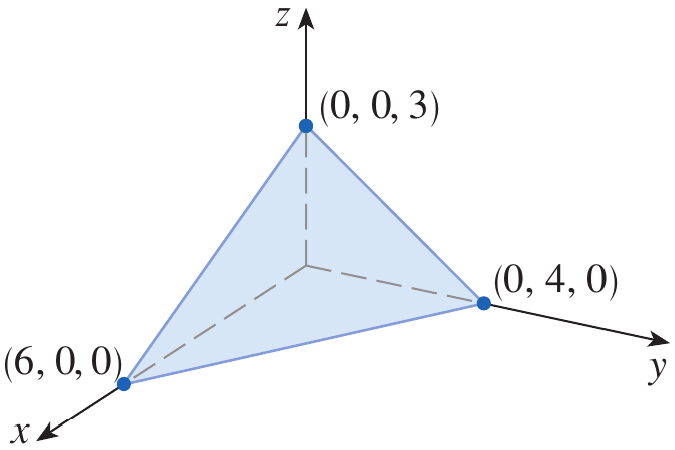
Figure 7. Plane through (2,4,-1) with intercepts on the coordinate axes.
Three noncollinear points determine a unique plane.
Suppose a plane contains the points P, Q, and R.
Two vectors lying in the plane can be formed as \mathbf a=\overrightarrow{PQ} and \mathbf b=\overrightarrow{PR}.
Both vectors lie in the plane.
Therefore, their cross product is perpendicular to both vectors and hence is a normal vector to the plane.
\boxed{\mathbf n=\mathbf a\times\mathbf b}
Find an equation of the plane that passes through the points
P(1,3,2),\qquad Q(3,-1,6),\qquad R(5,2,0)
First find two vectors lying in the plane.
\mathbf a=\overrightarrow{PQ}
\mathbf a = \langle3-1,-1-3,6-2\rangle = \langle2,-4,4\rangle
Similarly,
\mathbf b=\overrightarrow{PR}
\mathbf b = \langle5-1,2-3,0-2\rangle = \langle4,-1,-2\rangle
A normal vector is obtained from their cross product.
\mathbf n=\mathbf a\times\mathbf b
\mathbf n= \begin{vmatrix} \mathbf i&\mathbf j&\mathbf k\\ 2&-4&4\\ 4&-1&-2 \end{vmatrix}
Expanding,
\mathbf n = 12\mathbf i+20\mathbf j+14\mathbf k
Therefore, a normal vector is
\mathbf n=\langle12,20,14\rangle
Using point P(1,3,2), the equation of the plane is
12(x-1)+20(y-3)+14(z-2)=0
Dividing by 2 gives
6(x-1)+10(y-3)+7(z-2)=0
Therefore,
\boxed{6x+10y+7z=50}
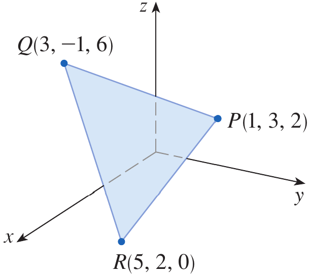
Figure 8. Portion of the plane through the three points P, Q, and R.
A line and a plane may intersect at one point, be parallel, or in special cases the line may lie entirely in the plane.
When the line is given parametrically, we can substitute its coordinates into the equation of the plane.
Find the point at which the line with parametric equations
x=2+3t,\qquad y=-4t,\qquad z=5+t
intersects the plane
4x+5y-2z=18
Substitute the parametric expressions for x, y, and z into the plane equation.
4(2+3t)+5(-4t)-2(5+t)=18
Simplifying,
8+12t-20t-10-2t=18
-10t-2=18
-10t=20
t=-2
Substitute t=-2 into the parametric equations.
x=2+3(-2)=-4
y=-4(-2)=8
z=5+(-2)=3
Therefore, the point of intersection is
\boxed{(-4,8,3)}
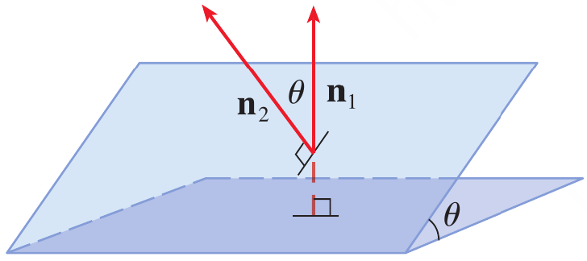
Figure 9. Intersection of line and plane.
The relationship between two planes can be determined from their normal vectors.
If two normal vectors are parallel, the planes are parallel.
For example, the planes x+2y-3z=4 and 2x+4y-6z=3 have normal vectors \mathbf n_1=\langle1,2,-3\rangle and \mathbf n_2=\langle2,4,-6\rangle.
Since \mathbf n_2=2\mathbf n_1 the planes are parallel.
If the normal vectors are not parallel, the planes intersect in a line.
The angle between two planes is defined as the acute angle between their normal vectors.
If \theta is the angle between the planes and \mathbf n_1 and \mathbf n_2 are normal vectors, then
\boxed{ \cos\theta = \frac{|\mathbf n_1\cdot\mathbf n_2|} {|\mathbf n_1||\mathbf n_2|} }
Find the angle between the planes
x+y+z=1
and
x-2y+3z=1
Find symmetric equations for the line of intersection L of these two planes.
The normal vectors are
\mathbf n_1=\langle1,1,1\rangle
and
\mathbf n_2=\langle1,-2,3\rangle
Their dot product is
\mathbf n_1\cdot\mathbf n_2 = 1(1)+1(-2)+1(3) = 2
Their magnitudes are
|\mathbf n_1|=\sqrt3
and
|\mathbf n_2|=\sqrt{1+4+9}=\sqrt{14}
Therefore,
\cos\theta = \frac{2}{\sqrt3\sqrt{14}} = \frac{2}{\sqrt{42}}
Hence,
\boxed{ \theta=\cos^{-1}\left(\frac{2}{\sqrt{42}}\right)\approx72^\circ }
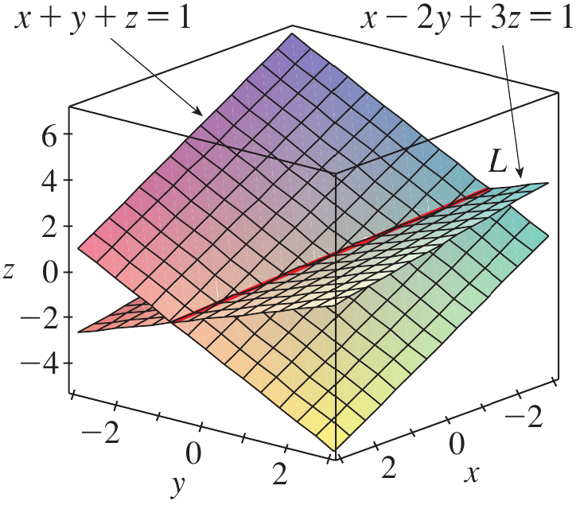
Figure 10. Two planes with normal vectors showing the angle between the planes.
First find a point on the line of intersection.
Set z=0 in the two plane equations.
x+y=1
x-2y=1
Solving these equations gives
x=1,\qquad y=0
Thus, a point on the intersection line is
P=(1,0,0)
The line of intersection is perpendicular to both normal vectors.
Therefore, its direction vector is parallel to their cross product.
\mathbf v=\mathbf n_1\times\mathbf n_2
\mathbf v= \begin{vmatrix} \mathbf i&\mathbf j&\mathbf k\\ 1&1&1\\ 1&-2&3 \end{vmatrix}
\mathbf v = 5\mathbf i-2\mathbf j-3\mathbf k
Thus,
\mathbf v=\langle5,-2,-3\rangle
Using the point (1,0,0) and this direction vector, the symmetric equations are
\boxed{ \frac{x-1}{5} = \frac{y}{-2} = \frac{z}{-3} }
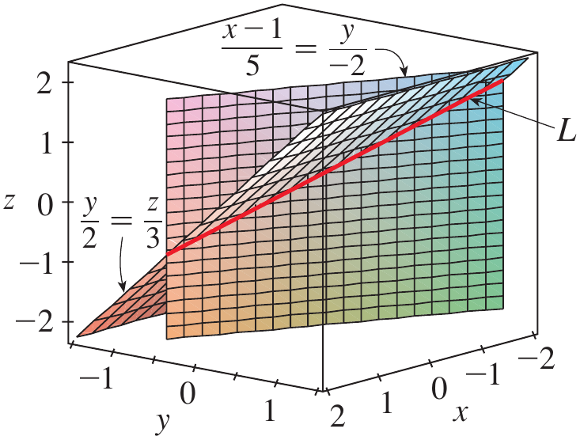
Figure 11. Two intersecting planes and their line of intersection.
Find an equation of the plane through the point (1,2,3) with normal vector
\mathbf n=\langle2,-1,4\rangle
Are the planes
2x+4y-6z=5
and
x+2y-3z=7
parallel?
A robotic positioning system moves the end-effector along a straight path in three-dimensional space. Its initial position is
P_0=(1,2,3)
and its direction of motion is represented by
\mathbf v=\langle2,-1,2\rangle
A flat calibration surface is represented by the plane
x+y+z=12
Determine the point at which the robotic end-effector’s straight-line path intersects the calibration surface.
The line passes through P_0=(1,2,3) and has direction vector
\mathbf v=\langle2,-1,2\rangle
Therefore, its parametric equations are
x=1+2t
y=2-t
z=3+2t
The calibration surface is
x+y+z=12
Substitute the parametric expressions into the plane equation.
(1+2t)+(2-t)+(3+2t)=12
Simplifying,
6+3t=12
Therefore,
t=2
Substituting t=2 into the line equations gives
x=1+2(2)=5
y=2-2=0
z=3+2(2)=7
Therefore, the robotic end-effector reaches the calibration surface at
\boxed{(5,0,7)}
This problem illustrates why equations of lines and planes are useful in robotics and mechatronics: the line describes the robot’s straight-line trajectory, while the plane describes the physical surface, and their intersection gives the exact position where the trajectory reaches the surface.
A line in three-dimensional space is determined by a point on the line and a direction vector.
The vector equation of a line through \mathbf r_0 with direction vector \mathbf v is \mathbf r=\mathbf r_0+t\mathbf v.
Parametric equations describe the coordinates of points on a line as functions of a parameter t.
Symmetric equations can be obtained from the parametric equations when the direction numbers are nonzero.
Two lines in space may be parallel, intersecting, or skew, with skew lines being neither parallel nor intersecting.
A plane is determined by a point on the plane and a normal vector perpendicular to the plane.
The scalar equation of a plane through (x_0,y_0,z_0) with normal vector \langle a,b,c\rangle is a(x-x_0)+b(y-y_0)+c(z-z_0)=0.
Three noncollinear points determine a plane, and a normal vector can be obtained by taking the cross product of two vectors lying in the plane.
Two planes are parallel when their normal vectors are parallel, while nonparallel planes intersect in a line whose direction is perpendicular to both normal vectors.
Equations of lines and planes provide essential mathematical tools for describing trajectories, surfaces, intersections, and spatial relationships in engineering, robotics, computer graphics, and other three-dimensional applications.
Solve the odd number exercises from exercise 1 to 68.
Exercises help transform theoretical concepts into practical understanding.
Mathematics is learned by doing and solving exercises will train you to analyze problems, select appropriate methods, and construct logical solutions.
Attempting problems sometimes leads to mistakes which provide opportunities for learning and improvement.
Regular practice increases speed, accuracy, and confidence.
Exercises are given in the Exercises file and you are expected to solve them on your own.